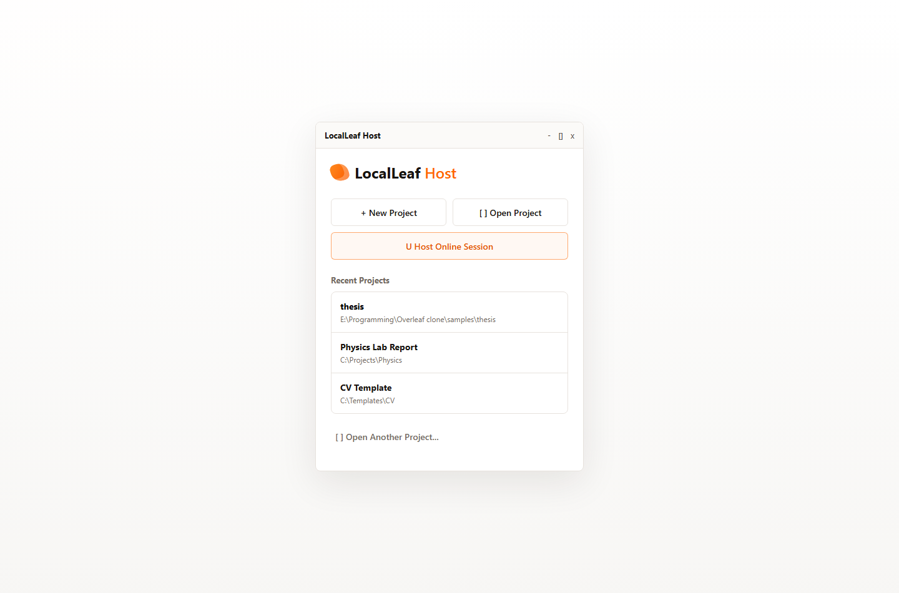
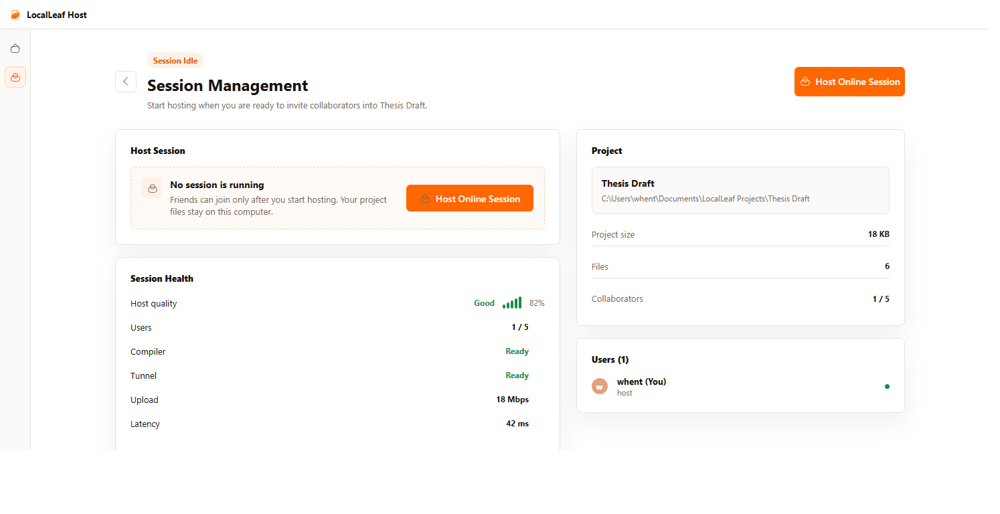
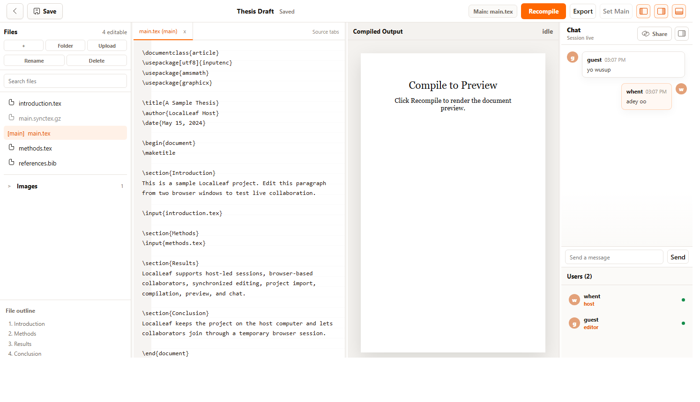
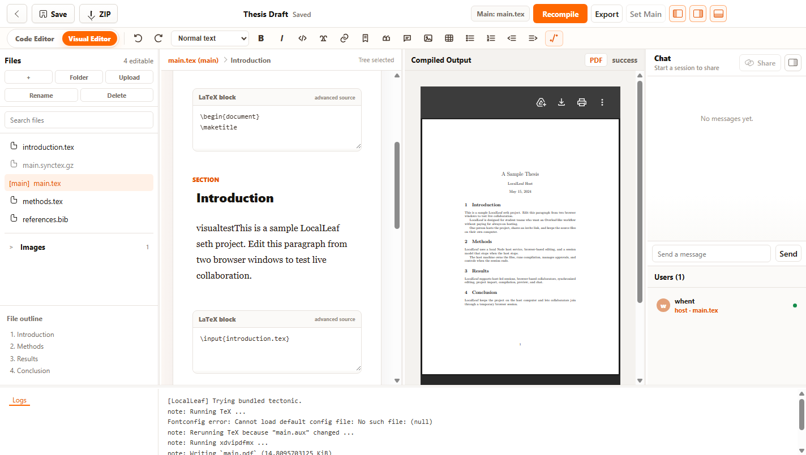

Open a project, share a link, approve collaborators, and write together.
Free. Local. Yours.
The Overleaf-like editor hosted by you.
Windows 10 / 11 and macOS. Latest release: v0.1.16
Preview
One laptop becomes the writing room.
1 / 4
Open a project
Start with an existing LaTeX folder or import a ZIP. LocalLeaf keeps the files on the host computer.
LocalLeaf Host




No accounts. No monthly server. No cloud storage.
Your draft stays on the host computer from first edit to final PDF.
Flow
A collaboration session without the cloud detour.
Choose
Open a LaTeX folder or ZIP project from the host computer.
Host
LocalLeaf starts the editor, compiler, and session controls.
Invite
Send the temporary link and approve people as they join.
Write
Edit, chat, compile, preview, export, and keep everyone in sync.
Stop
End the session. The project remains saved on the host PC.

For real working groups
Built for student groups, thesis drafts, lab notes, and quick reports.
LocalLeaf gives the host a quiet control center and gives collaborators an Overleaf-style editor in the browser.
Host
Approves people before they join
Files
Stay on the host computer
Session
Compile, export, then shut down cleanly
Q&A
Small answers before you install.
Do collaborators install anything?
No. Collaborators join through a browser link after the host approves them.
Where are project files stored?
On the host computer. LocalLeaf is designed around local files and temporary sessions.
Can it compile real LaTeX projects?
Yes. The app bundles Tectonic and can compile supported LaTeX projects locally.
What happens when the host closes the app?
The session ends, collaborators disconnect, and the project remains saved on the host computer.
Is LocalLeaf free?
Yes. LocalLeaf is built to remove account setup and monthly hosting from small LaTeX collaboration.
Write together. Hosted by you.